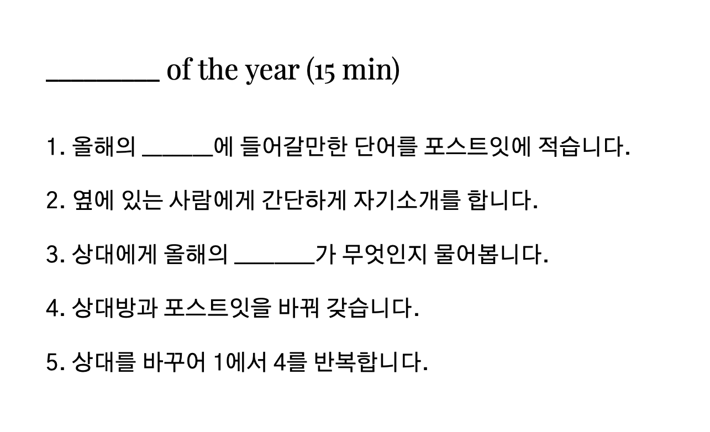

- Check in
- _____ of the year
- History map
- Reflection
Coffee break
- Theme of the next year
- Self development circle
- Check out
- 본 콘텐츠는 이진재님의 글을 웹페이지로 표현한 것입니다.
- Published by Minseop Kim
_____ of the year

- 올해의 _______에 들어갈만한 단어를 포스트잇에 적습니다.
- 옆에 있는 사람에게 간단하게 자기소개를 합니다.
- 상대에게 올해의 ________가 무엇인지 물어봅니다.
- 상대방과 포스트잇을 바꿔 갖습니다.
- 상대를 바꾸어 1에서 4를 반복합니다.